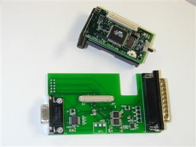
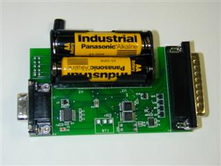

| Lesson 1: Getting Started with TinyOS and nesC
Last updated 9 September 2003 |
This lesson introduces the basic concepts of TinyOS and the nesC language in which the system is written. It includes a quick overview of the nesC language concepts and syntax to help you get started with programming in this environment.
The TinyOS system, libraries, and applications are written in nesC, a new language for programming structured component-based applications. The nesC language is primarily intended for embedded systems such as sensor networks. nesC has a C-like syntax, but supports the TinyOS concurrency model, as well as mechanisms for structuring, naming, and linking together software components into robust network embedded systems. The principal goal is to allow application designers to build components that can be easily composed into complete, concurrent systems, and yet perform extensive checking at compile time.
TinyOS defines a number of important concepts that are expressed in nesC. First, nesC applications are built out of components with well-defined, bidirectional interfaces. Second, nesC defines a concurrency model, based on tasks and hardware event handlers, and detects data races at compile time.
Components
Specification
A nesC application consists of one or more components linked
together to form an executable. A component provides and uses interfaces.
These interfaces are the only point of access to the component and are
bi-directional. An interface declares a set of functions called commands
that the interface provider must implement and another set of functions
called events that the interface user must implement. For a
component to call the commands in an interface, it must implement the
events of that interface. A single component may use or provide
multiple interfaces and multiple instances of the same interface.
Implementation
There are two types of components in nesC: modules and configurations.
Modules provide application code, implementing one or more interface.
Configurations are used to assemble other components together,
connecting interfaces used by components to interfaces provided by
others. This is called wiring. Every nesC application is
described by a top-level configuration that wires
together the components inside.
nesC uses the filename extension ".nc" for all source files -- interfaces, modules, and configurations. Please see TinyOS Coding and Naming Conventions for more information on naming conventions.
Concurrency Model
TinyOS executes only one program consisting of selected system
components and custom components needed for a single application. There
are two threads of execution: tasks and hardware event
handlers. Tasks are functions whose execution is deferred.
Once scheduled, they run to completion and do not preempt one another.
Hardware event handlers are executed in response to a hardware
interrupt and also runs to completion, but may preempt the execution of
a task or other hardware event handler. Commands and events that are
executed as part of a hardware event handler must be declared with the async
keyword.
Because tasks and hardware event handlers may be preempted by other asynchronous code, nesC programs are susceptible to certain race conditions. Races are avoided either by accessing shared data exclusively within tasks, or by having all accesses within atomic statements. The nesC compiler reports potential data races to the programmer at compile-time. It is possible the compiler may report a false positive. In this case a variable can be declared with the norace keyword. The norace keyword should be used with extreme caution.
Please see the nesC Language
Reference Manual for more information on programming in nesC.
So far this is all fairly abstract - let's look at a concrete example: the simple test program "Blink" found in apps/Blink in the TinyOS tree. This application simply causes the red LED on the mote to turn on and off at 1Hz.
Blink application is composed of two components: a module, called "BlinkM.nc", and a configuration, called "Blink.nc". Remember that all applications require a top-level configuration file, which is typically named after the application itself. In this case Blink.nc is the configuration for the Blink application and the source file that the nesC compiler uses to generate an executable file. BlinkM.nc, on the other hand, actually provides the implementation of the Blink application. As you might guess, Blink.nc is used to wire the BlinkM.nc module to other components that the Blink application requires.
The reason for the distinction between modules and configurations is to allow a system designer to quickly "snap together" applications. For example, a designer could provide a configuration that simply wires together one or more modules, none of which she actually designed. Likewise, another developer can provide a new set of "library" modules that can be used in a range of applications.
Sometimes (as is the case with Blink and BlinkM) you will have a configuration and a module that go together. When this is the case, the convention used in the TinyOS source tree is that Foo.nc represents a configuration and FooM.nc represents the corresponding module. While you could name an application's implementation module and associated top-level configuration anything, to keep things simple we suggest that you adopt this convention in your own code. There are several other naming conventions used in TinyOS code; a summary is provided
The nesC compiler, ncc, compiles a nesC application when given the file containing the top-level configuration. Typical TinyOS applications come with a standard Makefile that allows platform selection and invokes ncc with appropriate options on the application's top-level configuration.
Let's look at Blink.nc, the configuration for this application first:
Blink.nc
configuration Blink {
|
The first thing to notice is the key word configuration, which indicates that this is a configuration file. The first two lines,
configuration Blink {
}
simply state that this is a configuration called Blink.
Within the empty braces here it is possible to specify uses
and provides clauses, as with a module. This is important to
keep in mind: a configuration can use and provide interfaces!
The actual configuration is implemented within the pair of curly bracket following key word implementation . The componentsline specifies the set of components that this configuration references, in this case Main, BlinkM, SingleTimer, and LedsC. The remainder of the implementation consists of connecting interfaces used by components to interfaces provided by others.
Main is a component that is executed first in a TinyOS application. To be precise, the Main.StdControl.init() command is the first command executed in TinyOS followed by Main.StdControl.start(). Therefore, a TinyOS application must have Main component in its configuration. StdControl is a common interface used to initialize and start TinyOS components. Let us have a look at tos/interfaces/StdControl.nc:
StdControl.nc
interface StdControl {
|
We see that StdControl defines three commands, init(),start(), and stop(). init() is called when a component is first initialized, and start() when it is started, that is, actually executed for the first time. stop() is called when the component is stopped, for example, in order to power off the device that it is controlling. init() can be called multiple times, but will never be called after either start() or stop are called. Specifically, the valid call patterns of StdControl are init*(start | stop)* . All three of these commands have "deep" semantics; calling init() on a component must make it call init() on all of its subcomponents. The following 2 lines in Blink configuration
Main.StdControl -> SingleTimer.StdControl;wire the StdControl interface in Main to the StdControl interface in both BlinkM and SingleTimer. SingleTimer.StdControl.init()andBlinkM.StdControl.init() will be called by Main.StdControl.init(). The same rule applies to the start() and stop() commands.
Main.StdControl -> BlinkM.StdControl;
Concerning used interfaces, it is important to note that subcomponent initialization functions must be explicitly called by the using component. For example, the BlinkM module uses the interface Leds, so Leds.init() is called explicitly in BlinkM.init().
nesC uses arrows to determine relationships between interfaces. Think of the right arrow (->) as "binds to". The left side of the arrow binds an interface to an implementation on the right side. In other words, the component that uses an interface is on the left, and the component provides the interface is on the right.
The line
BlinkM.Timer -> SingleTimer.Timer;is used to wire the Timer interface used by BlinkM to the Timer interface provided by SingleTimer. BlinkM.Timer on the left side of the arrow is referring to the interface called Timer (tos/interfaces/Timer.nc), while SingleTimer.Timer on the right side of the arrow is referring to the implementation of Timer (tos/lib/SingleTimer.nc). Remember that the arrow always binds interfaces (on the left) to implementations (on the right).
nesC supports multiple implementations of the same interface. The Timerinterface is such a example. The SingleTimer component implements a single Timer interface while another component, TimerC, implements multiple timers using timer id as a parameter. Further discussions on timers can be found in Lesson 2.
Wirings can also be implicit. For example,
BlinkM.Leds -> LedsC;is really shorthand for
BlinkM.Leds -> LedsC.Leds;If no interface name is given on the right side of the arrow, the nesC compiler by default tries to bind to the same interface as on the left side of the arrow.
Now let's look at the module BlinkM.nc:
BlinkM.nc
module BlinkM {
|
The first part of the code states that this is a module called BlinkMand declares the interfaces it provides and uses. The BlinkM module provides the interface StdControl. This means that BlinkM implements the StdControl interface. As explained above, this is necessary to get the Blink component initialized and started. The BlinkM module also uses two interfaces: Leds and Timer. This means that BlinkM may call any command declared in the interfaces it uses and must also implement any events declared in those interfaces.
The Leds interface defines several commands like redOn(),redOff(), and so forth, which turn the different LEDs (red, green, or yellow) on the mote on and off. Because BlinkM uses the Leds interface, it can invoke any of these commands. Keep in mind, however, that Leds is just an interface: the implementation is specified in the Blink.nc configuration file.
Timer.nc is a little more interesting:
Timer.nc
interface Timer {
|
Here we see that Timer interface defines the start() and stop() commands, and the fired() event.
The start() command is used to specify the type of the timer and the interval at which the timer will expire. The unit of the interval argument is millisecond. The valid types are TIMER_REPEAT and TIMER_ONE_SHOT. A one-shot timer ends after the specified interval, while a repeat timer goes on and on until it is stopped by the stop() command.
How does an application know that its timer has expired? The answer is when it receives an event. The Timer interface provides an event:
event result_t fired();An event is a function that the implementation of an interface will signal when a certain event takes place. In this case, the fired() event is signaled when the specified interval has passed. This is an example of a bi-directional interface: an interface not only provides commands that can be called by users of the interface, but also signals events that call handlers in the user. Think of an event as a callback function that the implementation of an interface will invoke. A module that uses an interface must implement the events that this interface uses.
Let's look at the rest of BlinkM.nc to see how this all fits together:
BlinkM.nc, continued
implementation {
|
This is simple enough. As we see the BlinkM module implements the StdControl.init(), StdControl.start(), and StdControl.stop() commands, since it provides the StdControl interface. It also implements the Timer.fired() event, which is necessary since BlinkM must implement any event from an interface it uses.
The init() command in the implemented StdControl interface simply initializes the Leds subcomponent with the call to Leds.init(). The start() command invokes Timer.start() to create a repeat timer that expires every 1000 ms. stop() terminates the timer. Each time Timer.fired() event is triggered, the Leds.redToggle() toggles the red LED.
You can view a graphical representation of the component
relationships within an application. TinyOS source files include
metadata within comment blocks that ncc, the nesC compiler, uses to
automatically generate html-formatted documentation. To generate the
documentation, type make <platform> docs from the
application directory. The resulting documentation is located in docs/nesdoc/<platform>.docs/nesdoc/<platform>/index.html
is the main index to all documented applications.
TinyOS supports multiple platforms. Each platform has its own directory in the tos/platform directory. In this tutorial, we will use the mica platform as an example. If you are in the TinyOS source tree, compiling the Blink application for the Mica mote is as simple as typing
make micain the apps/Blink directory. Of course this doesn't tell you anything about how the nesC compiler is invoked.
nesC itself is invoked using the ncc command which is based on gcc. For example, you can type
ncc -o main.exe -target=mica Blink.ncto compile the Blink application (from the Blink.nc top-level configuration) to main.exe, an executable file for the Mica mote. Before you can upload the code to the mote, you use
avr-objcopy --output-target=srec main.exe main.srecto produce main.srec, which essentially represents the binary main.exe file in a text format that can be used for programming the mote. You then use another tool (such as uisp) to actually upload the code to the mote, depending on your environment. In general you will never need to invoke ncc or avr-objcopy by hand, the Makefile does all this for you, but it's nice to see that all you need to compile a nesC application is to run ncc on the top-level configuration file for your application. ncc takes care of locating and compiling all of the different components required by your application, linking them together, and ensuring that all of the component wiring matches up.
Now that we've compiled the application it's time to program the mote and run it. This example will use the Mica mote and the parallel-port-based programming board (mib500). Instructions on how to use the other programming boards are here. To download your program onto the mote, place the mote board (or mote and sensor stack) into the bay on the programming board, as shown below. You can either supply a 3 volt supply to the connector on the programming board or power the node directly. The red LED (labeled D2) on the programming board will be on when power is supplied. If you are using batteries to power the mote, be sure the mote is switched on (the power switch should be towards the connector).
Plug the 32-pin connector into the parallel port of a computer configured with the TinyOS tools, using a standard DB32 parallel port cable.
|  |  |
| Mica mote next to the programming board | Mica mote connected to the programming board |
Type: make mica install. If you get the error:
uisp -dprog=dapa --erasecheck whether the power is on. You can also get this error message if the mote is low on batteries (if you are using batteries), or if the wrong version of the uisp programming utility is installed (be sure to use the version in the TinyOS distribution).
pulse
An error has occurred during the AVR initialization.
* Target status:
Vendor Code = 0xff, Part Family = 0xff, Part Number = 0xff
Probably the wiring is incorrect or target might be `damaged'.
make: *** [install] Error 2
If you are using an IBM ThinkPad, it may be necessary to tell the tools to use a different parallel port. You can do this by adding the line
PROGRAMMER_EXTRA_FLAGS = -dlpt=3to the apps/Makelocal file (create it if it doesn't exist). The Makelocal file is for user-specific Makefile configuration.
If the installation is successful you should see something like the following:
compiling Blink to a mica binaryYou can now test the program by unplugging the mote from the programming board and turning on the power switch (if it's not already on). With any luck the red LED should light up every second - congratulations!
ncc -board=micasb -o build/mica/main.exe -Os -target=mica -Wall -Wshadow -DDEF_TOS_AM_GROUP=0x7d -finline-limit=200 -fnesc-cfile=build/mica/app.c Blink.nc -lm
avr-objcopy --output-target=srec build/mica/main.exe
build/mica/main.srec
compiled Blink to build/mica/main.srec
installing mica binary
uisp -dprog=dapa --erase
pulse
Atmel AVR ATmega128 is found.
Erasing device ...
pulse
Reinitializing device
Atmel AVR ATmega128 is found.
sleep 1
uisp -dprog=dapa --upload if=build/mica/main.srec
pulse
Atmel AVR ATmega128 is found.
Uploading: flash
sleep 1
uisp -dprog=dapa --verify if=build/mica/main.srec
pulse
Atmel AVR ATmega128 is found.
Verifying: flash
Typing make clean in the Blink directory will clean up the compiled binary files.
If you are still having errors, then you need to check your TinyOS
installation and check the Mica hardware. See System
and Hardware Verification for details.
To test your new-found TinyOS programming skills, try out the following:
This tutorial has just scratched the surface of nesC's syntax and features. Rather than document everything extensively, we refer the reader to the nesC Project Pages as well as the documentation included with the nesC distribution in nesc/doc. These sources contain more complete documentation on the language.
Hopefully this should be enough of a start to get you going on programming in this fun new language.